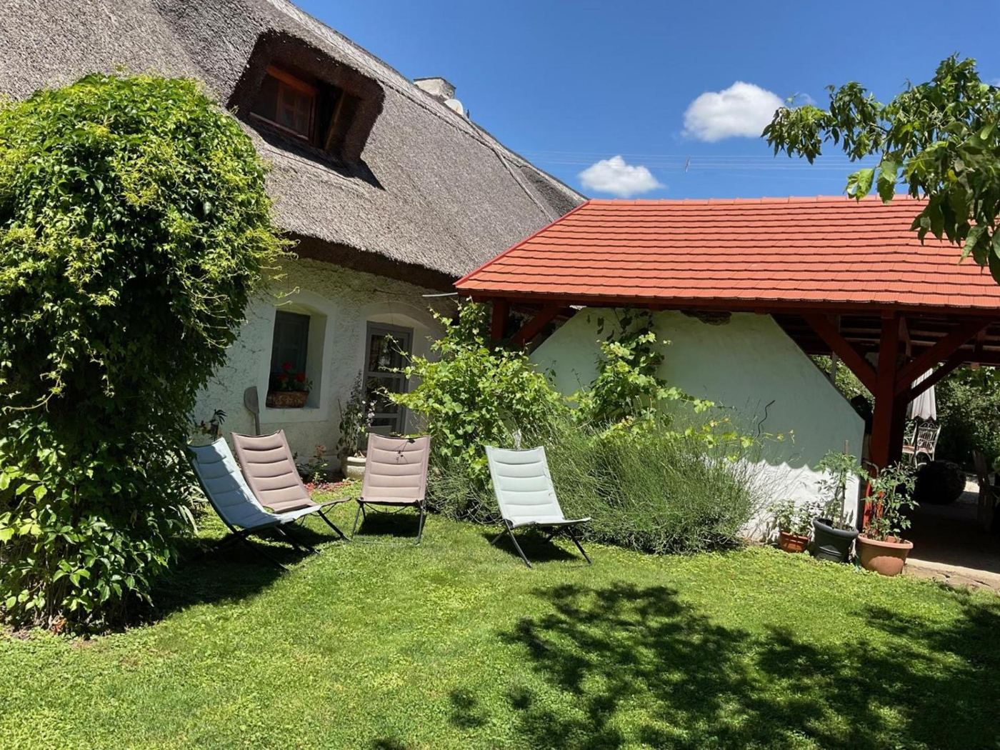

Belső udvar és kert
Kavicsos udvar lugassal; piknikezőhely és játszótér a kertben.

Vendégház · Köveskál, Káli-medence
Nádtetős, meszelt falú ház kavicsos udvarral és lugassal — 5 perc séta a faluközpontig.
4,9 / 5
Google-értékelés · 56 értékelés
9,4 / 10
lake-balaton.com · 170 értékelés
21 440 Ft-tól / éj
tájékoztató kiinduló ár
5 perc
séta a faluközpontig
A Három Huszár nádtetős, meszelt falú vendégház Köveskálon, a Káli-medencében. A kavicsos belső udvaron lugas és kerti asztalok állnak, a nagy kertben pedig piknikezőhely és játszótér is várja a vendégeket. Reggelente kontinentális reggelit szolgálunk fel.
Megnézem a képeketKavicsos udvar lugassal; piknikezőhely és játszótér a kertben.
Egyes szobákban; tornác vagy terasz is tartozhat a szobához.
Reggelente kontinentális reggelit szolgálunk fel.
Privát parkoló a helyszínen, Wi-Fi a nyilvános helyeken.
Két szobatípusban fogadjuk a vendégeinket — mindkettő két fős, nagy franciaággyal.

Minden szoba saját fürdőszobás, külön WC-vel és zuhanyzóval.

Minden szoba saját fürdőszobás, külön WC-vel és zuhanyzóval.
Egyes szobákban kőkandalló és klíma, tornác vagy terasz; elektromos vízforraló, hűtő és sütő a legtöbb szobában. A tágas hálószobákhoz szekrény tartozik.
Nézzen körül a házban és a kertben — a képekre kattintva nagyítva is megnézheti őket.
A vendégek a Google-on és a lake-balaton.com-on is értékelték a szállást.
56 értékelés alapján
Megnyitás a Google-onlake-balaton.com
170 értékelés alapján
Megnyitás a lake-balaton.com-onÉrkezni 15:00 és 21:00 között, távozni 8:00 és 11:00 között lehet.
Igen, reggelente kontinentális reggelit szolgálunk fel.
A szálláson saját parkoló van.
Háziállatot sajnos nem tudunk fogadni.
Igen, Wi-Fi elérhető.
Érkezés
15:00–21:00
Távozás
08:00–11:00
Háziállat
Nem engedélyezett
Dohányzás
Nemdohányzó szállás
A feltüntetett 21 440 Ft-tól / éj összeg tájékoztató kiinduló ár — a pontos árat a szállásadó adja meg.
Köveskálban, a Káli-medencében, a Balaton-felvidéken. A közelben kilátók, a Hegyestű geológiai bemutatóhely és a Theodora-forrás is várja.
Adja meg az érkezés és a távozás időpontját, válasszon szobát, és küldje el az ajánlatkérést. Kérdés esetén hívjon minket: 06 70 364 4977.
Ajánlatkérését rögzítettük. A szállásadó a megadott elérhetőségeken veszi fel Önnel a kapcsolatot.